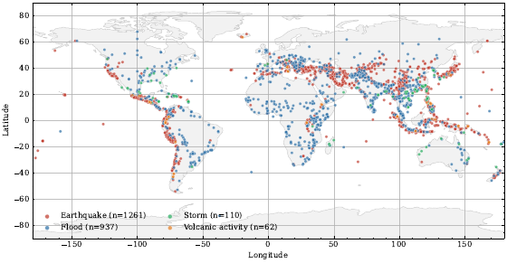
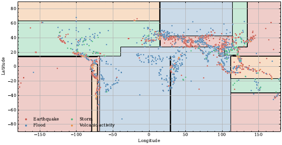
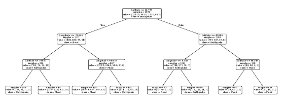
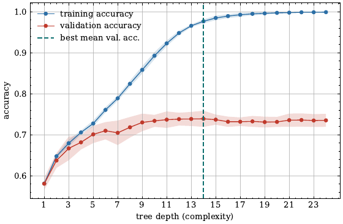
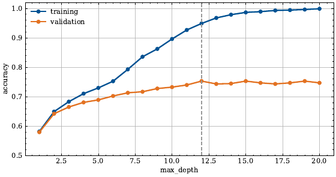
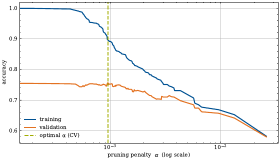
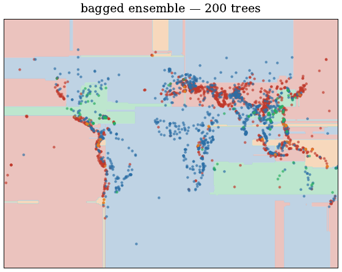
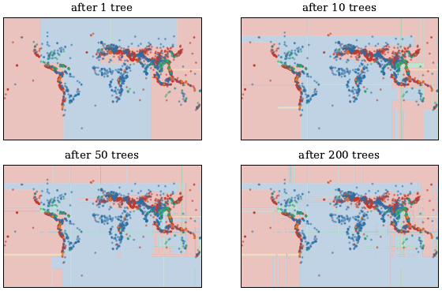

Assumption-light models that partition the feature space, and the ensembles that make them competitive.
Scroll within the panel to move through the slides; scroll the page to reach the figures below. Jump by subchapter on the left.
One representative figure per topic, generated by 02_lectures_code/05.ipynb.










Statistical Learning (FIM), WI001287, TUM School of Management. Content developed by Lars Böcking.